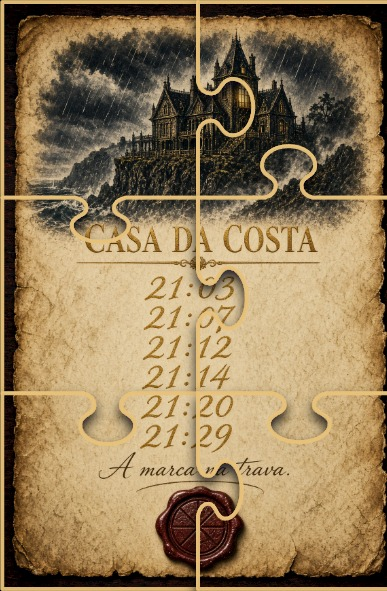
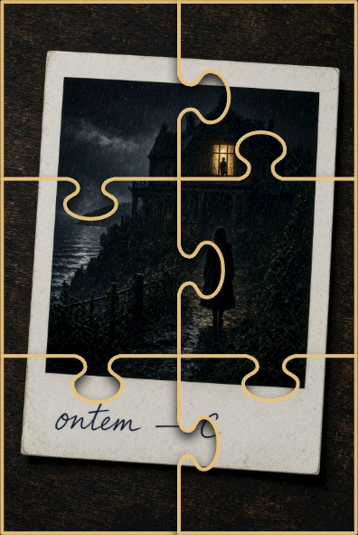
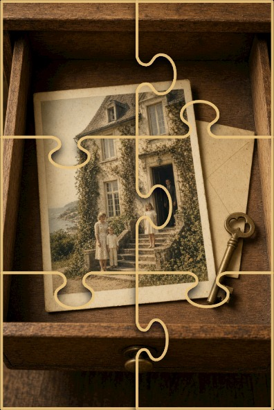
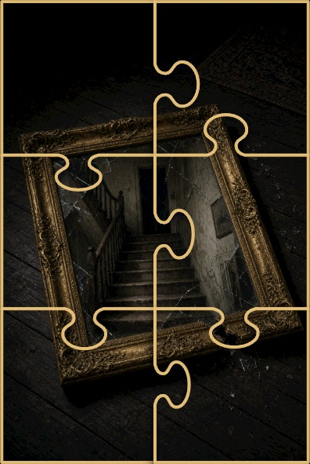

Versão 3 · modo solo
MOSAICO
Cada pista é uma peça. Ninguém vê o quadro inteiro — até encaixar. Pasta própria: não misturar com a mesa (v1) nem com a noite (v2).




Versão 3 · modo solo
Cada pista é uma peça. Ninguém vê o quadro inteiro — até encaixar. Pasta própria: não misturar com a mesa (v1) nem com a noite (v2).



